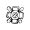
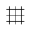
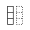
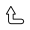
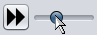
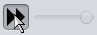
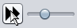
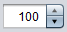
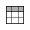

{kind=link}
General information
PalenqueLayout.jar)
from the latest release page.
PalenqueLayout.jar file,
or (should it not start) please enter the following command:
java -jar PalenqueLayout.jar
Features overview
With the help of the PalenqueLayout application you can build a new item layout, and then test its corresponding control phase state that results from executing the three rotational and the reflectional transformations on the initial arrangement:
{kind=link}
After startup, the application displays the default layout, together with the picture of the lid in the background and the reference numbers (as seen on the first screenshot above). The items can be moved or deleted, new elements can be added (to a maximum of 25 items), and also the layout as a whole can be "shuffled" (which moves each item away by a small amount). All changes of the arrangement are registered, and the user has the possibility to undo and/or redo them at will (within the limit of 100 different layouts). In addition, one selected layout can also be placed separately in a memory register for a later retrieving. The current arrangement can be saved to a file or to the clipboard, and the items data can be exported in various formats (HTML, XML, CSV, TXT).
In the background three additional layers can be turned on/off: the picture of the lid's upper portion (from the Greene drawing), the 51×51-sized coordinate system grid and the default layout in light cyan color as a reference. The opacities of the layers can be tuned on demand, and these settings are persistently stored and restored between the different sessions. A screenshot of the desired size can be taken at any phase of the transformations, and then it can be saved to a PNG file or put directly to the clipboard.
Although the rendering "engine" behind the application is certainly not too advanced, but it does provide some special features that could be helpful during the analyzation: in normalized mode (see below) it continously adjusts the focal length to assure that the small squares of the grid always have an integer size (thus avoiding measurement inaccuracies and rendering artifacts), and it also optimizes the drawing of these squares in a way that the operations are precomputed in memory, and then the adjacent line segments are all painted together in one step (which prevents the segments from being drawn in small "wavering" sections and multiple times).
Function descriptions
The functions can be accessed by clicking the buttons on the toolbar or by using their shortcut keys:
{kind=link}
Select and move ( , 1 ): In this mode (which is the default) any item in the layout can be selected and moved to a new position. At first, if the mouse pointer hits an item, its shape is changed and the coordinates of this element are shown in the tooltip:
{kind=link}
Pressing the left mouse button makes the item selected:
{kind=link}
Now it can be moved anywhere on the layout, the new coordinates are constantly updated:
{kind=link}
Pressing the left button again relocates the item to the new position:
{kind=link}
The moving operation can be canceled by using the right mouse button, or by pressing the left button and holding the Shift key down at the same time.
Add new item ( , 2 ): In this mode a new item can be added to the layout. Initially a triplet is displayed, together with its destination coordinates:
{kind=link}
Pressing the right mouse button (or the left, while Shift is held) changes the triplet to a Sun, and pressing once again to a star symbol:
{kind=link}
By pressing the left mouse button the new item is placed on the layout:
{kind=link}
Remove item ( , 3 ): After choosing this mode, any item can be removed from the layout by simply clicking on it with the left mouse button.
Lid picture ( , 5 ): By clicking this button (or by pressing its shortcut key) the lid picture layer behind the layout can be switched on or off.
Grid ( , 6, G ): With this function the 51×51-sized coordinate system grid can be displayed or hidden.
Reference ( , 7 ): Turning on the reference layer displays the default layout behind the current one in light cyan color:
{kind=link}
Item numbers ( , 8 ): By using this function the item reference numbers can be switched on or off. The numbers serve exclusively the purpose of referring to the elements within a single layout, and are not preserved between different layouts (i.e. even a small item relocation might cause a complete renumbering of the items). The method for determining the reference numbers must have been (over)complicated a bit in order to be able to simulate algorithmically the initial (rather heuristic) numbering presented in the very first study.
The exact procedure to determine the ordering between any two items is the following (see also the source):
- three rings are defined with the radii √65, √150 and outside;
- the item in the more inner ring is lesser (has a smaller number);
- the item in the upper half is lesser than in the lower half;
- the item in the left half is lesser than in the right half;
- the item with a smaller X coordinate is lesser;
- the item with a larger Y coordinate is lesser;
- the item with a smaller item type (Triplet, Sun, Star) is lesser.
Randomize (shuffle) layout ( , R ): This function moves each item away from its current position by a small amount (or leaves it in its place).
Default layout ( , D ): Resets the layout to the default one.
Undo ( , Z, Backspace ): Restores the layout before the last modifying operation. Any layout changes (moving, adding, removing, importing, recalling from memory, etc.) will put the current layout onto the undo stack, while undoing a layout puts the current one onto the redo stack. By using the Backspace key, between the two last layouts can be switched forth and back (which might be useful for comparing layouts).
Redo ( , Y, Backspace ): Restores the layout previously undone.
Normalized rendering ( , N ): If it is enabled (which is the default), then 1. the focal length is adjusted continously during the resizing of the window, so that each square grid will always have the very same (integer) size; 2. the operations are precomputed in memory, then the adjacent line segments are joined together, and finally they are painted in a single line drawing step, which results in a nicer and more accurate picture (especially in 3D).
Without normalized rendering there is no focal length adjusting, and the items are simply painted over each other after having executed the various transformations on them. Initially this was the only rendering mode, but then the normalized method was integrated from the PalenqueAnimation project. The main reason, why this simple rendering mode remained selectable, is the fact that using it (and lowering the opacity of the main layer at the same time) we are able to observe the overlaps of the items after the transformations, which might be advantageous during the analyzation:
{kind=link}
Layout memory ( , M ): Using this function the current layout can be placed in a memory register. By clicking the button (or by pressing its shortcut key) the layout is put into the memory, and the function gets deactivated. After changing the layout, the button is reactivated again (in a toggled state), and can be used to recall the layout from the memory (and to clear this at the same time). Pressing Shift+M clears the memory without retrieving the layout previously stored in it. This function can be used to bring two layouts that are "far away" (i.e. many operations are needed to mutate the first into the second) next to each other, and then (e.g. with the help of the Backspace key) they can be compared more comfortably. Of course, the export and import functions could also serve this purpose, but for a single layout using the memory might be much easier.
Export ( , E ): With this function the current layout can be exported (saved) to a file or to the clipboard. After invoking this function, a dialog window pops up with the export / import code (see below) of the layout:
{kind=link}
With the help of the buttons the code can be put to the clipboard or saved to a file (as a shortcut you can use the Alt modifier together with the letter underlined; so e.g. press Alt+C to copy the code to the clipboard, or Alt+F to save it as a file).
The format of the layout code is the following:
- the "PQL" (PalenqueLayout) string (case sensitive);
- for each item (if any exists):
- the type identifier character (T = Triplet, S = Sun, R = Star);
- the X coordinate in two characters;
- the Y coordinate in two characters.
The negative coordinates are represented in ten's complement format, i.e. as if they were added to 100 (e.g. -20 is 80, -2 is 98).
Import ( , I ): With this function a previously exported layout can be imported (loaded) from a file or from the clipboard:
{kind=link}
The import code can be pasted from the clipboard (Alt+C) or loaded from a file (Alt+F), and it can also be manually edited. To actually import the layout you should click the Import button, or press Alt+I or Ctrl+Enter. To interrupt the importing procedure just click the Cancel button or hit Esc. If the code is correct, the layout is imported as the current one (the previous one is placed on the top of the undo stack), otherwise an error message appears:
{kind=link}
Because the code is normalized before importing, it can contain whitespaces anywhere inside, and also the items can be in any arbitrary order.
Play / stop
(
 ,
Space
):
Pressing this button starts or stops the transformation procedure.
The playback stops automatically at the last frame, and pressing the button
again restarts the process. The proceeding can be stopped at any time,
and any inner state can be inspected (the tooltip shows the coordinate under
the pointer):
,
Space
):
Pressing this button starts or stops the transformation procedure.
The playback stops automatically at the last frame, and pressing the button
again restarts the process. The proceeding can be stopped at any time,
and any inner state can be inspected (the tooltip shows the coordinate under
the pointer):
{kind=link}
To start
(
 ,
Home,
C
):
Jump back to the start of the playback (to the first frame).
The editing functions (move, add, remove) and the item reference numbers
are only available at the first frame.
Please notice that the coordinates displayed as a tooltip are different at the first
frame and at the intermediate or last frames: in editing mode (first frame)
the tooltip appears only then, when an item is hit and then it shows the coordinate of this item
(i.e. of its center square), while in playback mode it shows the coordinates
of any square currently under the pointer.
,
Home,
C
):
Jump back to the start of the playback (to the first frame).
The editing functions (move, add, remove) and the item reference numbers
are only available at the first frame.
Please notice that the coordinates displayed as a tooltip are different at the first
frame and at the intermediate or last frames: in editing mode (first frame)
the tooltip appears only then, when an item is hit and then it shows the coordinate of this item
(i.e. of its center square), while in playback mode it shows the coordinates
of any square currently under the pointer.
The frame slider can be used to set the current frame directly (without playback):
{kind=link}
To end
(
 ,
End,
V
):
Jump to the last frame, i.e. to the end of the transformations
(control phase state).
,
End,
V
):
Jump to the last frame, i.e. to the end of the transformations
(control phase state).
Quick playing ( , Q ) and the speed slider: With the slider the speed of the playback can be set and modified (). The Quick playing button (or its shortcut) can be used to turn the speed up to its highest value temporarily (e.g. during playback), and then to restore the previous value. Toggling the button sets the speed to the maximum and disables the slider (), while pressing it again restores the previous speed ().
Layer opacities ( , O ): Using this function the opacity values of the various layers can be modified. Clicking the button (or pressing the shortcut key) brings up the opacity dialog:
{kind=link}
With the help of the sliders and the spinners () the opacity value of the 4 layers (lid, grid, reference, main layer) can be modified. The 0 value means full transparency, 100 means full opacity. Changing the values immediately updates the picture (the dialog might be moved to another position outside of the main window, if desired). The changes can be finalized by clicking the OK button (or by pressing Enter or Alt+O). To cancel the changes and revert to the old values, click the Cancel button, or press Esc (or Alt+C). With the Reset button (Alt+R) the original values can be restored at any time. The opacity values are persisted using the Java Preferences API, and are reloaded at next startup.
Item data ( , X ): Clicking this button (or pressing the shortcut key) brings up the Item Data dialog that displays the data of the layout items, and also provides the possibility of exporting these data in various formats:
{kind=link}
By clicking a column header the table can be reordered, and the columns can be rearranged by moving the headers. These changes (and also the reposition of the dialog) remain in effect during a session, but are not persisted between different runnings. The table can also be used to select rows and to copy these data to the clipboard by pressing the corresponding operating system shortcut (e.g. Ctrl+C).
To export the item data first you should select the desired format (HTML, XML, CSV, TXT), then click the Export button (or press Alt+E). The export dialog (already known from the Export function) is shown with the data contained in the scrollable text panel:
{kind=link}
The buttons of this dialog can be used to copy the data to the clipboard or to save it to a file (the list is filtered and the extension is appended automatically):
{kind=link}
Screenshot ( , S ): With this function the current state of the display (i.e. the upper) panel can be saved to a file or put directly to the clipboard. After invoking it the general save dialog is shown, which is extended by the possibility of changing the resolution (in pixels) and copying the image directly to the clipboard (instead of saving it to a file):
{kind=link}
To save the image into a PNG file enter the name (extension not needed) and click the Save button (or press Enter). To copy to the clipboard click the Clipboard button (or press Alt+C), which copies the image and also closes the dialog. Please note that the state of the rendering mode (normalized or not) affects also the painting of the screenshot image (the application rerenders the scene completely with the resolution specified, and then saves or copies it to the destination).
Information ( , Alt+I ): This function displays a dialog window with a short informational text about the application (to open a link directly in the default browser the left button can be used, while the right button brings up a context menu with the possibility of copying the link to the clipboard):
{kind=link}